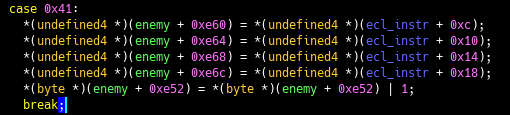
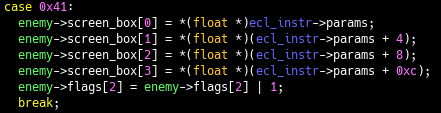
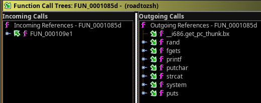
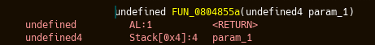
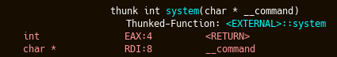

Exploitation de binaires, Reverse engineering : Rappels
Gauvain Roussel-Tarbouriech (gauvain@govanify.com)
Reverse engineering sous Ghidra
Partez de ce que vous connaissez, que ce soit un string ou l’entrypoint (si le binaire est petit !)
Toutes les vues de Ghidra sont synchronisées, sélectionnez dans une fenêtre pour voir ce a quoi correspond cette selection dans une autre (c-à-d asm vs. pseudocode)
Pseudocode
N’oubliez pas de retyper les variables et les renommer selon vos déductions
Si un bout de code fait pas mal de maths avec des constantes, cherchez ces constantes sur votre moteur de recherche/GitHub
Le pseucode n’est pas toujours fiable, n’hésitez pas à comparer avec l’assembleur si vous ne comprenez pas exactement une partie
Pseudocode
Si vous avez une variable pas mal utilisée comme X+{1,2,3,4,8,...} alors c’est surement soit un array soit une structure. Les structures peuvent être créés automatiquement sous ghira, et vous pouvez retyper la variable en array. Gardez ce qui fait le plus sens !  Les XRefs

Les XRefs vous permettent de trouver comment et ou une fonction, constante ou valeur globale est utilisée
Lexique entre paranthèse : c = call, R = read, W = write, * = inconnu
Les XRefs
Vous pouvez aussi trouver tous les appels et utilisations de fonction dans une fonction sélectionnée avec Windows→Function Call Trees
Reverse dynamique
Utilisez gdb pour voir dynamiquement comment certaines fonctions fonctionnent
Vous pouvez patcher temporairement les valeurs de retour dans Ghidra pour voir si le résultat est plus lisible dans le pseudocode right click → Patch Instruction
Mitigations
NX (No eXecute) : rend la stack non exécutable. Empêche l’exécution de shellcode
ASLR (Address Space Layout Randomization) : rend les adresses de librairies, stack et heap aléatoire à chaque exécution du programme. Rends, entre autre, le ROP plus difficile
PIE (Position Independant Executable) : met le code assembleur du programme a une région aléatoire de la mémoire à chaque exécution du processus. Rends le ROP plus difficile
Stack Cookie : met toutes les variables locales avant les variables de type buffer dans la stack et ajoute une valeur aléatoire avant la valeur de retour et la vérifie avant chaque exécution. Rends le ROP plus difficile
ROP
Return Oriented Programming. C’est une technique d’exploitation réutilisant du code déjà existant. Indispensable si le NX est présent
Peut être exploité quand on peut réécrire l’adresse de retour dans la stack (grace à, par exemple, un buffer overflow)
Buffer overflow
On écrit par-delà un buffer ce qui réécrit l’adresse de retour dans la stack
On peut savoir où elle est réécrite
en créant un pattern de brujin et regardant quelle
valeur contient eip
Si le programme segfault avant de réécrire
cette adresse regardez la première valeur sur la stack
dans gdb au moment du ret fatidique
Gadgets
Un gadget est une partie de code assembleur finissant par un ret, on peut en trouver avec ROPgadget
Ainsi le code s’exécute puis exécute la prochaine adresse sur la ropchain
Dans les prochaines slides, si le registre dans lequel on pop n’est pas précisé il n’est pas important, sinon il est crucial
Arguments
Chaque fonction prends des arguments soit sur la stack soit sur un registre
On peut le savoir pour une fonction en particulier en regardant ghidra
Si la fonction n’est pas présente, faites un binaire de test sur la même plateforme avec la même architecture ! (32 vs. 64bits)
Arguments
Exemple stack
Exemple registre
Arguments
Imaginons que function_reg prenne en
argument le registre rdi et qu’on veuille faire l’appel
function_reg(12)
Arguments
| pop rdi; ret | 12 | fonction_reg |
|---|---|---|
rdi=inconnu
Arguments
| pop rdi; ret | 12 | fonction_reg |
|---|---|---|
rdi=inconnu
pop est exécuté, 12 est enlevé de la stack, rdi=12
Arguments
| pop rdi; ret | 12 | fonction_reg |
|---|---|---|
rdi=inconnu
pop est exécuté, 12 est enlevé de la stack, rdi=12
ret est exécuté, on continue
Arguments
| pop rdi; ret | 12 | fonction_reg |
|---|---|---|
pop est exécuté, 12 est enlevé de la stack, rdi=12
ret est exécuté, on continue
function_reg est exécuté
Arguments
Imaginons que function_stack prenne en
argument le Stack[+0x4] et qu’on veuille faire l’appel
function_stack(12)
Arguments
| Stack[0x0] | Stack[0x4] | Stack[0x8] |
|---|---|---|
| fonction_stack | pop; ret | 12 |
function_stack n’est pas encore
appellé
Arguments
| Stack[-0x4] | Stack[0x0] | Stack[0x4] |
|---|---|---|
| fonction_stack | pop; ret | 12 |
function_stack n’est pas encore
appellé
function_stack est appelé, la stack se met à
jour, Stack[0x4] est utilisé comme argument
Arguments
| Stack[-0x8] | Stack[-0x4] | Stack[0x0] |
|---|---|---|
| fonction_stack | pop; ret | 12 |
function_stack est appelé, la stack se met à
jour, Stack[0x4] est utilisé comme argument
Le stack est màj, pop est appellé et enlève l’argument de la stack
Arguments
| Stack[-0xC] | Stack[-0x8] | Stack[-0x4] |
|---|---|---|
| fonction_stack | pop; ret | 12 |
Le stack est màj, pop est appellé et enlève l’argument de la stack
Le stack est nettoyé, on peut continuer l’exécution
Arguments
P.S: Si on a plus d'un argument sur la stack il faudra trouver un gadget avec autant de pop que d'arguments suivi d'un ret.
ret2libc
On veux lancer un /bin/sh mais notre programme n’a aucun gadget utile
- On obtiens l’adresse de la libc dans la mémoire (infoleak)
- On appelle
system("/bin/sh")!
Permet de palier au manque de gadgets utiles
Infoleak
Deux cas possible pour du ROP/ret2libc :
- Sans PIE et stack cookie : on peut faire une ropchain qui va imprimer l’adresse de __libc_start_main directement
- Avec PIE et stack cookie : on a besoin d’un infoleak nous permettant de lire au minimum la stack. Un string format peut faire l’affaire
Un infoleak peut être utile dans bien d’autre cas !
Race Condition
Un bug logique dans lequel on peut modifier une variable pendant que le programme l’utilise et ne la vérifie pas
Aussi appellée TOCTOU (Time Of Check Time Of Use) pour les fous
Exemple : le programme écrit dans un fichier temporaire et le réutilise plus tard, on peut réécrire ce fichier
Command Injection
Un bug logique possible lorsqu’on laisse l’utilisateur renseigner des arguments d’une commande.
Si non-sanitisés, l’utilisateur peut escape et exécuter les commandes qu’il veux, exemple : "cat test;/bin/sh"
Un autre exemple connu : les SQLi (injections SQL)
Format String
Un bug présent lorsqu’un programme printf un input que l’utilisateur controle
Le printf charge ses arguments dans la stack. Il est possible d’abuser cette technique afin de jouer avec la stack
- %x : Affiche le paramètre en hexadécimal
- %n : Écrit le nombre de charactères imprimés dans l’argument traité en tant que pointeur
- %.33d : Écrit 33 charactères
- %2$x : Affiche le second paramètre dans la stack. Fonctionne avec n’importe quels charactères spéciaux de printf
Exemple : %.65536d%35$n écrit la valeur 65535 (0x10000) sur l’élément pointé par la 35ème valeur sur la stack